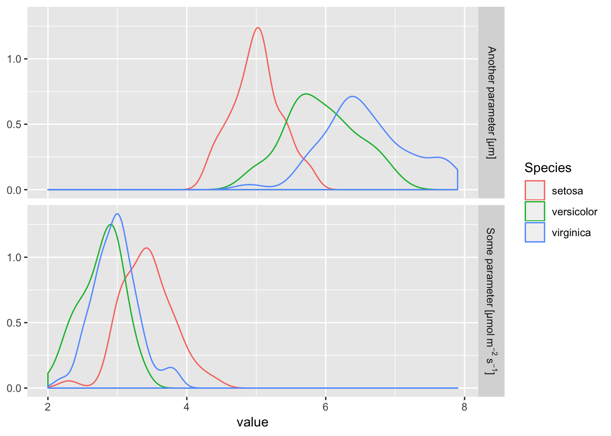
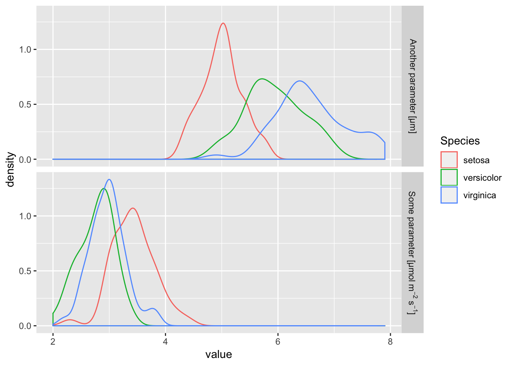
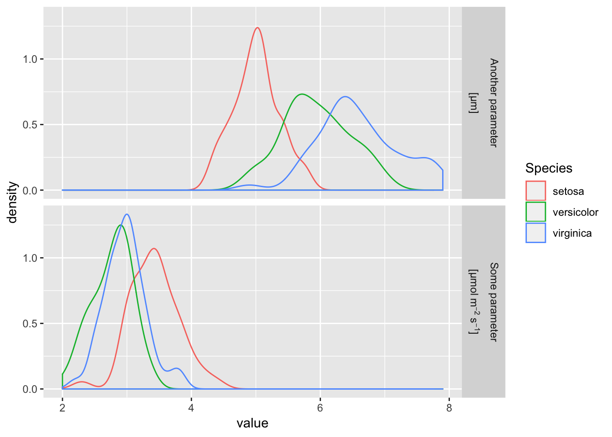
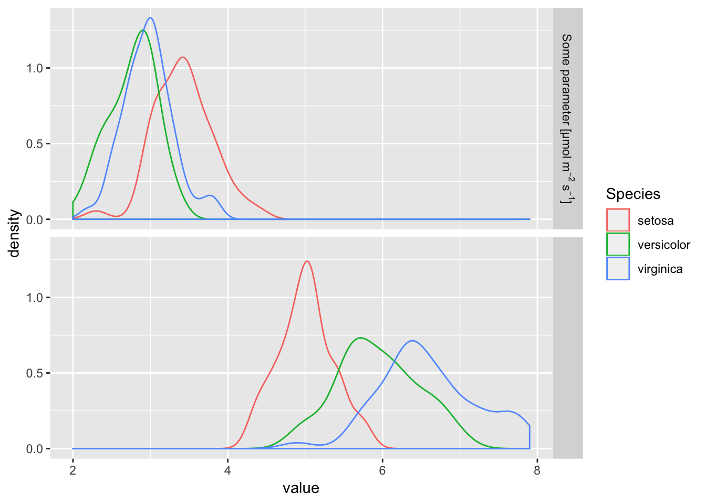
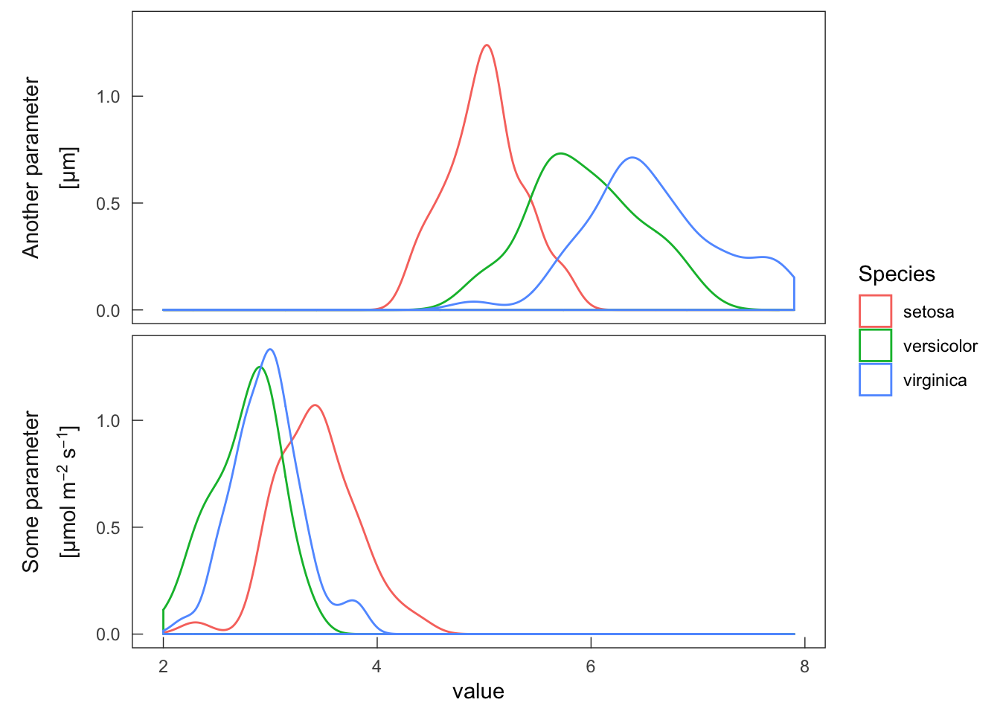

即投稿クオリティの図をggplot2で作るメモ (ラベル周り)
facetで特殊文字を使う場合はlabel_parsed、expression形式で書く。
df <-
iris %>%
select(1, 2, 5) %>%
gather(variable, value, -Species)
df %>%
mutate(variable = case_when(
variable == "Sepal.Width" ~ "'Some parameter'~'[\u00B5'*mol~m^-2~s^-1*']'",
variable == "Sepal.Length" ~ "'Another parameter'~'[\u00B5'*'m'*']'")) %>%
ggplot(aes(value, col = Species)) +
geom_density() +
facet_grid(variable ~ ., labeller = label_parsed) +
labs(y = NULL)
途中で変換するとその後の取り回しが悪くなるので、プロットする段階で変える。
ggplot2::as_labellerで予めラベルを登録しておく。
fig_base <-
df %>%
ggplot(aes(value, col = Species)) +
geom_density()
label_1row <-
c(Sepal.Width = "'Some parameter'~'[\u00B5'*mol~m^-2~s^-1*']'",
Sepal.Length = "'Another parameter'~'[\u00B5'*'m'*']'",
hogehoge = "NOT SHOWN")
label_2row <-
c(Sepal.Width = "atop('Some parameter', '[\u00B5'*mol~m^-2~s^-1*']')",
Sepal.Length = "atop('Another parameter', '[\u00B5'*'m'*']')",
hogehoge = "NOT SHOWN")
parsed_single <- as_labeller(label_1row, label_parsed)
parsed_double <- as_labeller(label_2row, label_parsed)
(fig_1 <- fig_base + facet_grid(variable ~ ., labeller = parsed_single))
(fig_2 <- fig_base + facet_grid(variable ~ ., labeller = parsed_double))
該当するラベルがない場合は、ラベルが空白になる。
df %>%
mutate(variable = if_else(variable == "Sepal.Length", "test", variable)) %>%
ggplot(aes(value, col = Species)) +
geom_density() +
facet_grid(variable ~ ., labeller = parsed_single)
\nで折り返すと変なことになる。
label_ng <-
as_labeller(c(Sepal.Length = "'Another parameter\n'*'['*mu*'m'*']'",
Sepal.Width = "'Some parameter\n'*'[\u00B5'*mol~m^-2~s^-1*']'"),
label_parsed)
fig_base + facet_grid(variable ~ ., labeller = label_ng)theme_setで一括適用する細かいスタイルを設定する。
tick_len <- .2
theme_set(
# theme_bw() +
theme_bw(base_family = "Arial") +
theme(text = element_text(),
panel.grid = element_blank(),
# ティックを内向きに
axis.ticks.length=unit(-tick_len, "cm"),
axis.ticks = element_line(size = rel(.5)),
axis.text.x = element_text(margin=unit(c(2*tick_len, 0, 0, 0), "cm")),
axis.text.y = element_text(margin=unit(c(0, 2*tick_len, 0, 0), "cm")),
# stripのサイズ、位置、背景を調整
strip.text = element_text(size = rel(1)),
strip.placement = "outside",
strip.background = element_blank())
)facet_grid(switch = "y")でfacetラベルを左に持っていく。
fig_3 <-
fig_base +
facet_grid(variable ~ ., labeller = parsed_double, switch = "y") +
labs(y = NULL)
fig_3
pdf出力して、fontを埋め込む。
temp_file_original <- paste0(tempfile(), ".pdf")
temp_file_embed <- paste0(tempfile(), ".pdf")
quartz(type = "pdf", file = temp_file_original)
fig_3
dev.off()
embedFonts(file = temp_file_original, outfile = temp_file_embed,
options = "-c \"<</NeverEmbed []>> setdistillerparams\" -f ")## quartz_off_screen
## 2埋め込み状態を確認する。 bash経由でやる。 pdffontsでembed列がyesになっていれば大丈夫らしい。
system(str_glue("pdffonts {temp_file_embed}"))name type emb sub uni prob object ID
------------------------------------ ----------------- --- --- --- ---- ---------
QVYYFG+ArialMT TrueType yes yes yes 72 0
NYAKOE+ArialMT TrueType yes yes yes 38 0
DJZUJO+ArialMT TrueType yes yes yes 26 0
MEMITD+ArialMT TrueType yes yes yes 95 0
RWTTYK+ArialMT TrueType yes yes yes 91 0
CKVQWC+ArialMT TrueType yes yes yes 32 0
MJPVJK+ArialMT TrueType yes yes yes 20 0
PPAHAH+ArialMT TrueType yes yes yes 78 0
TIZGFW+ArialMT TrueType yes yes yes 62 0
ZQRGZO+ArialMT TrueType yes yes yes 58 0
KPYJFU+ArialMT TrueType yes yes yes 52 0
QSKFCU+Symbol TrueType yes yes yes 46 0
JFRXDS+ArialMT TrueType yes yes yes 40 0
GJHAAU+ArialMT TrueType yes yes yes 34 0
NGQXUK+ArialMT TrueType yes yes yes 28 0
NBBCTZ+ArialMT TrueType yes yes yes 68 0
FRCCMY+ArialMT TrueType yes yes yes 22 0
ZUPVSQ+ArialMT TrueType yes yes yes 93 0
AMATMK+ArialMT TrueType yes yes yes 64 0
WHUINY+ArialMT TrueType yes yes yes 74 0
HUOCGU+Symbol TrueType yes yes yes 54 0
EMXJMO+ArialMT TrueType yes yes yes 48 0
TNUQGN+Symbol TrueType yes yes yes 42 0
IFRBQQ+ArialMT TrueType yes yes yes 36 0
KJUGHP+ArialMT TrueType yes yes yes 24 0
OOHDYH+ArialMT TrueType yes yes yes 83 0
BEUQQG+ArialMT TrueType yes yes yes 70 0
PSXPLM+ArialMT TrueType yes yes yes 30 0
RMTSJQ+ArialMT TrueType yes yes yes 80 0
NGLPKZ+ArialMT TrueType yes yes yes 66 0
SQSHEN+ArialMT TrueType yes yes yes 60 0
SNUPUT+ArialMT TrueType yes yes yes 76 0
NMWUGM+ArialMT TrueType yes yes yes 56 0
MKMMNZ+Symbol TrueType yes yes yes 50 0
FZWFDH+ArialMT TrueType yes yes yes 44 0Session information
devtools::session_info()## setting value
## version R version 3.5.0 (2018-04-23)
## system x86_64, darwin15.6.0
## ui X11
## language (EN)
## collate en_US.UTF-8
## tz Australia/Sydney
## date 2019-01-26
##
## package * version date source
## assertthat 0.2.0 2017-04-11 CRAN (R 3.5.0)
## backports 1.1.2 2017-12-13 CRAN (R 3.5.0)
## base * 3.5.0 2018-04-24 local
## bindr 0.1.1 2018-03-13 CRAN (R 3.5.0)
## bindrcpp * 0.2.2 2018-03-29 CRAN (R 3.5.0)
## blogdown 0.8 2018-07-15 CRAN (R 3.5.0)
## bookdown 0.7 2018-02-18 CRAN (R 3.5.0)
## broom * 0.5.0 2018-07-17 CRAN (R 3.5.0)
## cellranger 1.1.0 2016-07-27 CRAN (R 3.5.0)
## cli 1.0.1 2018-09-25 CRAN (R 3.5.0)
## colorspace 1.3-2 2016-12-14 CRAN (R 3.5.0)
## compiler 3.5.0 2018-04-24 local
## crayon 1.3.4 2017-09-16 CRAN (R 3.5.0)
## curl 3.2 2018-03-28 CRAN (R 3.5.0)
## datasets * 3.5.0 2018-04-24 local
## devtools * 1.13.6 2018-06-27 CRAN (R 3.5.0)
## digest 0.6.18 2018-10-10 cran (@0.6.18)
## dplyr * 0.7.8 2018-11-10 cran (@0.7.8)
## evaluate 0.11 2018-07-17 CRAN (R 3.5.0)
## forcats * 0.3.0 2018-02-19 CRAN (R 3.5.0)
## ggplot2 * 3.1.0 2018-10-25 CRAN (R 3.5.0)
## glue 1.3.0 2018-07-17 cran (@1.3.0)
## googleway * 2.7.1002 2018-11-11 Github (SymbolixAU/googleway@a9bbd33)
## graphics * 3.5.0 2018-04-24 local
## grDevices * 3.5.0 2018-04-24 local
## grid 3.5.0 2018-04-24 local
## gtable 0.2.0 2016-02-26 CRAN (R 3.5.0)
## haven 1.1.2 2018-06-27 CRAN (R 3.5.0)
## hms 0.4.2 2018-03-10 CRAN (R 3.5.0)
## htmltools 0.3.6 2017-04-28 CRAN (R 3.5.0)
## htmlwidgets 1.3 2018-09-30 CRAN (R 3.5.0)
## httpuv 1.4.5 2018-07-19 CRAN (R 3.5.0)
## httr 1.3.1 2017-08-20 CRAN (R 3.5.0)
## jsonlite 1.5 2017-06-01 CRAN (R 3.5.0)
## knitr * 1.20 2018-02-20 CRAN (R 3.5.0)
## labeling 0.3 2014-08-23 CRAN (R 3.5.0)
## later 0.7.5 2018-09-18 CRAN (R 3.5.0)
## lattice 0.20-35 2017-03-25 CRAN (R 3.5.0)
## lazyeval 0.2.1 2017-10-29 CRAN (R 3.5.0)
## lubridate * 1.7.4 2018-04-11 CRAN (R 3.5.0)
## magrittr * 1.5 2014-11-22 CRAN (R 3.5.0)
## MASS * 7.3-50 2018-04-30 CRAN (R 3.5.0)
## memoise 1.1.0 2017-04-21 CRAN (R 3.5.0)
## methods * 3.5.0 2018-04-24 local
## mime 0.6 2018-10-05 cran (@0.6)
## modelr 0.1.2 2018-05-11 cran (@0.1.2)
## munsell 0.5.0 2018-06-12 CRAN (R 3.5.0)
## nlme 3.1-137 2018-04-07 CRAN (R 3.5.0)
## pillar 1.3.0 2018-07-14 CRAN (R 3.5.0)
## pkgconfig 2.0.2 2018-08-16 CRAN (R 3.5.0)
## plyr * 1.8.4 2016-06-08 CRAN (R 3.5.0)
## promises 1.0.1 2018-04-13 CRAN (R 3.5.0)
## purrr * 0.2.5 2018-05-29 CRAN (R 3.5.0)
## R6 2.3.0 2018-10-04 cran (@2.3.0)
## Rcpp 1.0.0 2018-11-07 cran (@1.0.0)
## readr * 1.1.1 2017-05-16 CRAN (R 3.5.0)
## readxl 1.1.0 2018-04-20 CRAN (R 3.5.0)
## reshape2 1.4.3 2017-12-11 CRAN (R 3.5.0)
## rlang 0.3.0.1 2018-10-25 cran (@0.3.0.1)
## rmarkdown 1.10 2018-06-11 cran (@1.10)
## rprojroot 1.3-2 2018-01-03 CRAN (R 3.5.0)
## rstudioapi 0.8 2018-10-02 CRAN (R 3.5.0)
## rvest 0.3.2 2016-06-17 CRAN (R 3.5.0)
## scales 1.0.0 2018-08-09 CRAN (R 3.5.0)
## shiny 1.2.0 2018-11-02 cran (@1.2.0)
## stats * 3.5.0 2018-04-24 local
## stringi 1.2.4 2018-07-20 CRAN (R 3.5.0)
## stringr * 1.3.1 2018-05-10 cran (@1.3.1)
## tibble * 1.4.2 2018-01-22 CRAN (R 3.5.0)
## tidyr * 0.8.2 2018-10-28 cran (@0.8.2)
## tidyselect 0.2.5 2018-10-11 cran (@0.2.5)
## tidyverse * 1.2.1 2017-11-14 CRAN (R 3.5.0)
## tools 3.5.0 2018-04-24 local
## utils * 3.5.0 2018-04-24 local
## withr 2.1.2 2018-03-15 CRAN (R 3.5.0)
## xfun 0.3 2018-07-06 CRAN (R 3.5.0)
## xml2 1.2.0 2018-01-24 CRAN (R 3.5.0)
## xtable 1.8-3 2018-08-29 CRAN (R 3.5.0)
## yaml 2.2.0 2018-07-25 cran (@2.2.0)雑記
- あと乾物重を測ったらデータが揃うので、そろそろ投稿
- 今回からStanを使い始めた
- 解析->可視化->解釈の流れがシミュレーションで途切れるから捗らない
- マルチタスク適正をあげていきたい